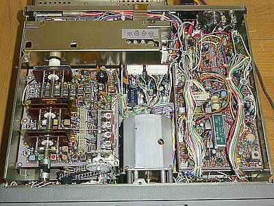
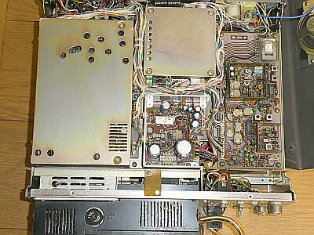
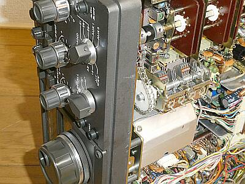
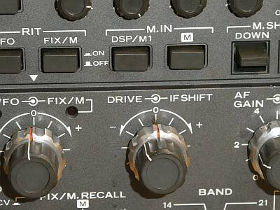
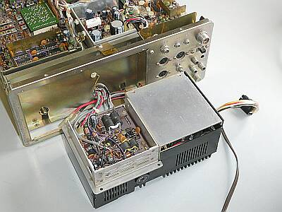
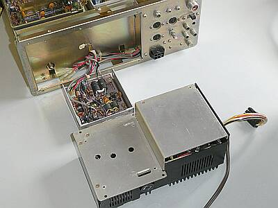
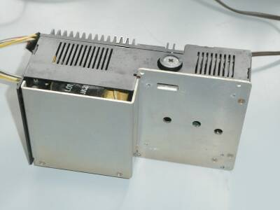
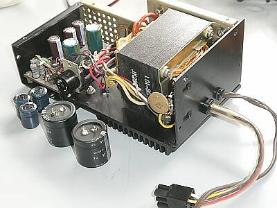
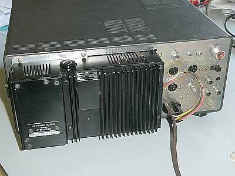

 |
下蓋（下ケース）を開いた状態です
右がＩＦユニット
フィルタは、ＳＳＢ用がひとつのみ（オプションなし）
ＶＦＯを挟んで
左は、ＲＦユニット
オール・ソリッド・ステートとはいえ、ＶＣによるチューンは必要な設計です
ほぼ同時期のＹＡＥＳＵ ＦＴ-３０１も同様で、真空管の設計を引き継いだというか、半導体に置き換えた設計ということだと思います
|
 |
上蓋（上ケース）を開けて写したもの
大きなシールドは、ＰＬＬ-ＶＣＯ部
各バンドのＶＣＯ発振コイルや、４９.０８ＭＨｚバンドパスなどは、この下に隠れている基板にあります
ＶＦＯの上にあるシールド部、カウンタ・ユニットの後ろにスライドＳＷがあります
当時のアマチュア・バンドを外れると、デジタル周波数表示のコロンを点滅させ送信禁止をする国内仕様か、５００ＫＨｚ巾をフル・カバーする海外仕様かの切り替えのようです
現在は、１．８／３．５／７ＭＨｚ帯が拡張されましたので、ここは制限をしない側に切り替えました（最初、なんでコロンが点滅？って思いました） |
 |
下写真のドライブ（ＤＲＩＶＥ）ツマミで駆動されるＶＣです
送受ともに同調を取ります |
 |
このドライブ（ＤＲＩＶＥ）表示をみると、まさかＶＣを駆動しているとは見えませんね
ＲＦパワーツマミは別にあるし、いったい何をするものかと回してみたら、あららドライブ／プリセレ動作
バリキャップか何かで電子チューンかと思って、下蓋をあけて中を見たらなんとチェーン駆動でＶＣを回していました |
ビートが濁って聞こえます
もしやと、別の電源を使って給電すると正常です
ＰＳ-２５に原因があるということが確認できたので、分解修理です |
 |
電源ユニットＰＳ-２５を取り外しました
１０Ｗファイナル・ユニットが取り付いています
１００Ｗ機は、この電源トランスのところが、１００Ｗのファイナル・ユニットの席でしょう |
 |
１０Ｗのファイナル・ユニットをヒートシンクから取り外した様子
こうしないとＰＳ-２５の分解ができません |
 |
ＰＳ-２５という電源ユニットとしては、きっとこの形でしょう |
 |
交換した電解コンデンサ
同じ容量であっても、随分体積が小さくなっています
２個のブロック・コンデンサのうちの一つ
３個の縦型チューブラ・コンデンサのうちの一つ
が、ＮＧになっていました（予想通り！）
テストで良品も含め、全て交換
これらの交換によって、濁り音問題は解決でしょう
６Ｐ本体接続用コネクタの取り出し部
ゴム・ブッシングがボロボロになっていたので、この際コードプロテクタに交換しました |
 |
ＰＳ-２５単体で動作させて問題の無いことを確認して、最後は、このように収まりました
結果、正常な動作が得られました |
|
生誕４５年を超えるかという代物ですが、見た目はまずまずのもので、内部は綺麗です
接触不良は、お決まりの事象
いつもの通りクリーニングから作業をスタートしました
クリーニング後は、そこそこ動作をしている感じです
ただビートが濁って嫌な音がします
疑った電源の問題でした（平滑コンデンサの劣化）
カウンタの周波数表示が少し（２００Ｈｚ位）違っている感じがします
２８ＭＨｚ帯が、周波数表示が消え動作しません、いわゆるＬｏｃｋ外れです
ＶＣＯの発振停止、これはＯＳＣコイルの調整でクリア
５００ＫＨｚのバンド幅が安定に得られません
端のほうに行くと、やはり周波数表示が消えます
４９.０８ＭＨｚのバンドパス調整（際にあっては、かなりシビア）で、ほぼほぼカバーするようになりましたが、あと一歩です
ＶＦＯの出力を少し上げて安定な動作になることの確認ができたので、これで良しとしました
後は、基準周波数の調整・・・
余談ですが、入手時の状態では、アナログ・ダイヤルの設定（１００ＫＨｚ台）位置が全く違っていました
さて、最後はお決まりのスペック確認
いずれも、オリジナル・スペックは、満足しています
まず受信感度
全バンド ０．２５μＶ Ｓ/Ｎ １０ｄｂ ４０ｄBμで、Ｓ９になることを確認
いわゆるＴＲＩＯ／ＫＥＮＷＯＯＤの音がします
送信パワー
各アマチュアバンドにおいて、最大１２Wでほとんど変わりません（要ＤＲＩＶＥピーク調整） |